WHO AM I AND HOW DID I KNOW ABOUT ONJA MADAGASCAR?
ABOUT ME
My name is Sedera and I am a girl who comes from a village of Ambatondrazaka called Soalazaina. It is an awesome place to visit, especially if you are the kind of person who loves to see green forests and to swim as there are lots of rivers there as well so if you are interested on those then you better visit our village one day 😅 ..... Anyway guys, apart from those, I have two sisters and a nephew. My elder sis's name is Fiderana, and she has a son called Nomery. My younger sis's name is Elize. Also, my mum's name is Odette and my dud's is Iary. They are all so lovely and kind, I miss them so much 🥹
HOW I KNEW ONJA
So I first knew Onja through my headteacher in Secondary School in 2018 as Onja sent invitations to them for Fiderana (my elder sis) and Noeline (a dev in Campus one) as they were ones of the brilliant students that Onja first selected for the first wave. However, back then, my sister was still studying in high school so Onja didn't take her in yet as Onja only takes the ones who are not studying anymore so Noeline was in and she is already working as a dev here at Onja now. When all the students from the first wave were already working then Onja planned to have another way which is called WAVE 2.1 as the first wave is WAVE 1, so they called Fiderana if she was still ready to study, and yes, she was but she has just given birth to her son and he was still only 6 months so she still couldn't make it. Then, Noeline informed me to the people at Onja that I am Fiderana's sister and one of the brilliant student in Soalazaina as well so Onja recalled us and discussed about everything. The first step that they informed me was to do the Camp in MAHANORO, so we went there in January 2025, and thanks to God as once the result came out in February 2025 then I was one of the students that they chose so I was over the moon 🥹😍 ...... So after a week of the result, I went here in Tamatave to start my study and I started studying at Onja on the 3rd of March 2025, and I am now still studying in my second year of study 🙏
WHAT IS ONJA MADAGASCAR AND WHAT IT DOES?
WHAT IS ONJA MADAGASCAR??
Onja is one of the awesome organisations in Madagascar, which is located in Toamasina Madagascar and in Mahanoro too. It has loads of workers in it, including local Malagasy people, and foreigners as well 🤩🇲🇬⭐
WHAT DOES IT DO?
Onja is training brilliant Malagasy youth here in Madagascar to become great developers and to reach English at at least C1 level in just 2.5 years. Therefore, it has many worker teams, such as the ECDIER, THE RECRUITMENT, THE DEVS, THE NON-DEVS, etc and those people help the organisation to grow faster and stronger as well by giving and doing all of their bests in everything they do, and same as the students as well. That means every single person at Onja works really hard to reach their goals and to help Madagascar to grow and the other people around them 🙏💙
If you would like to know more about Onja Madagascar, then you can click on this link
HOW DOES MY LIFE AND STUDY AT ONJA LOOK LIKE?
MY STUDY
So, during the one year, our group which called "The Adventurers" learnt English from A1 level to C1 level. It was such a fantastic and an enjoyable year to the four of us as we were four girl in the group. During that time, we tried to help each other at school and even during our every day lives, and we also shared love with each other which was really lovely, I felt like we were siblings who lived in a big Campus together ❤️🫂
These are some pictures of the four of us during our study times for the first year with some of our teachers and friends at Onja 😍🫶 :
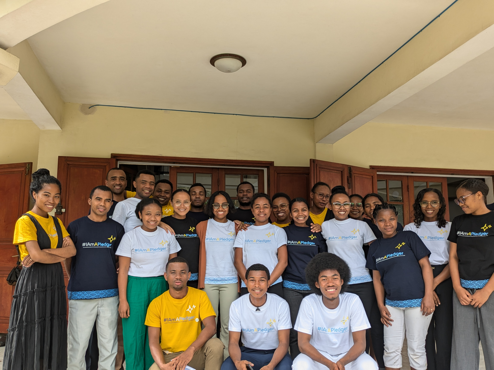
.JPG)
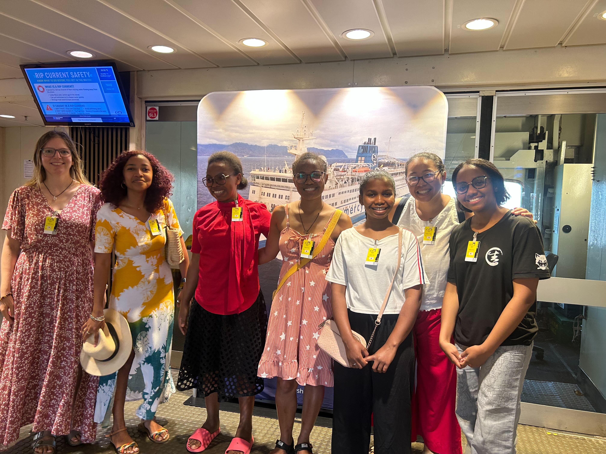
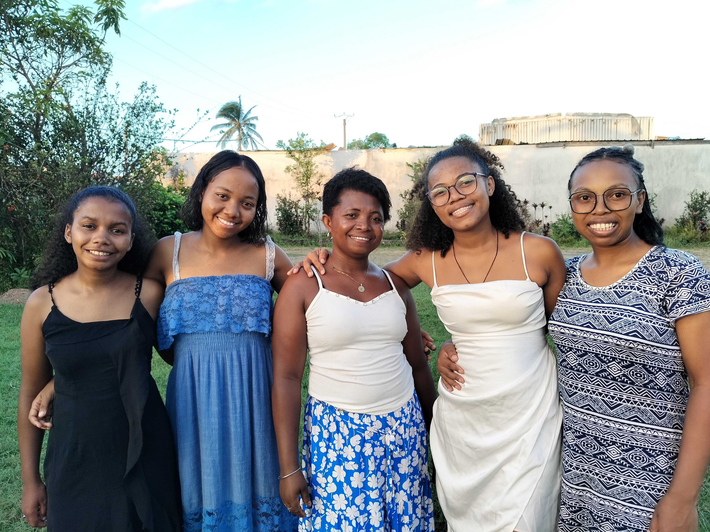
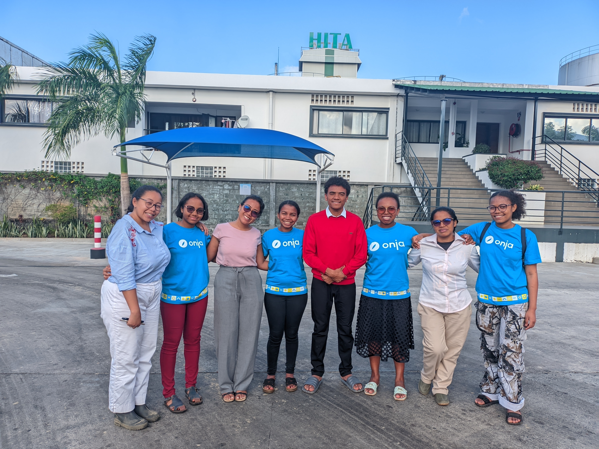
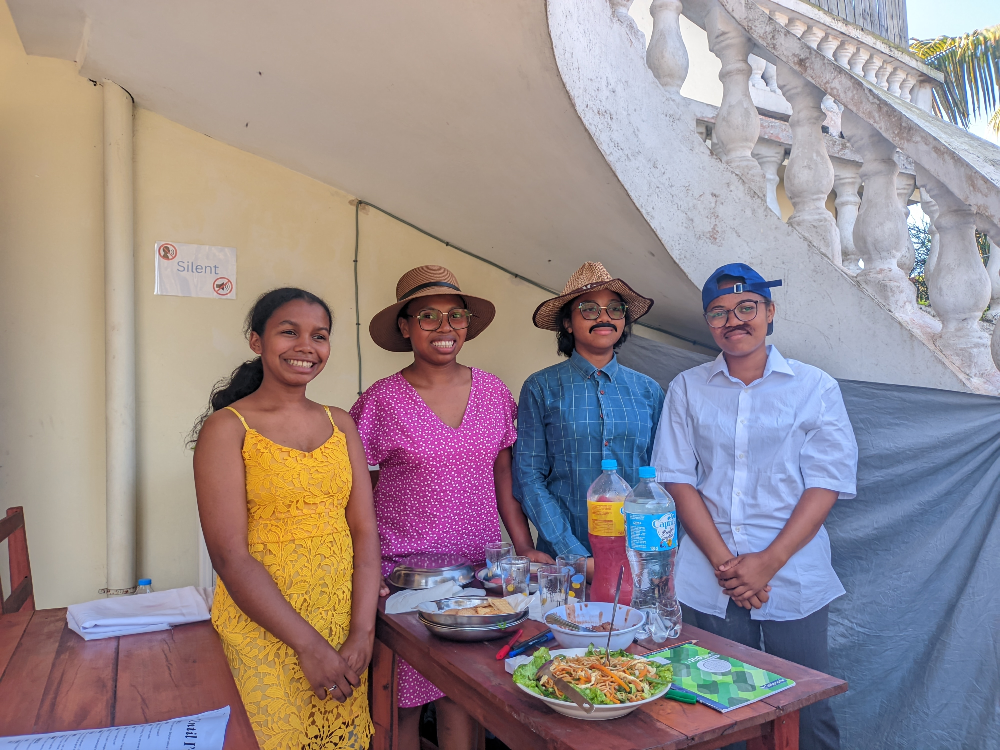
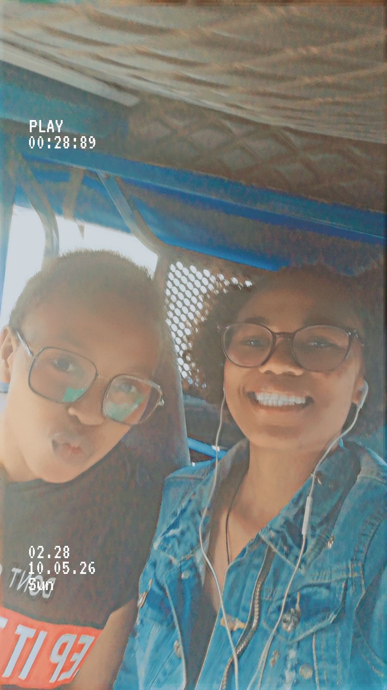
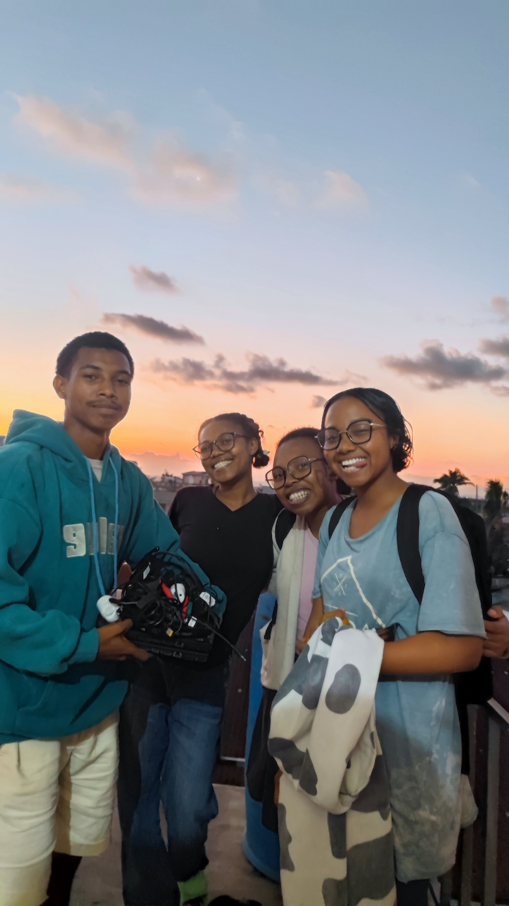
After the first year, we started our journey on learning to code and we were all so excited as it was our first time to know more about what coding actually was so that was why 😀😀 ..... Now, we are actually still in the middle of our journey on learning coding but there is just a small change as one of us (Marina) is already working as a 'Carbon Officer at Onja' so there are actually the three of us (Naomy, Thia, and I) who still continue studying. It was so sad at first as the four of us were really close to each other but now, we are already getting used to it and we also can have the chance to see each other at the Campus at Onja during the day 🥹🤗
Here are some of our pictures during the second year with some of our teachers and friends ✨💞 :
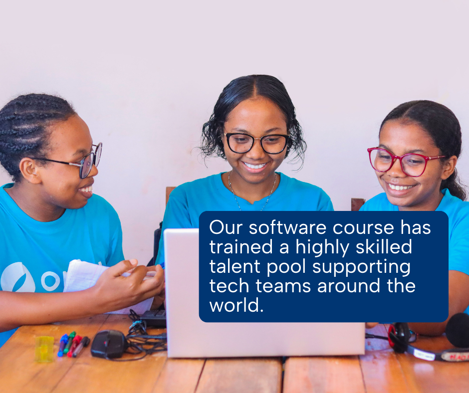
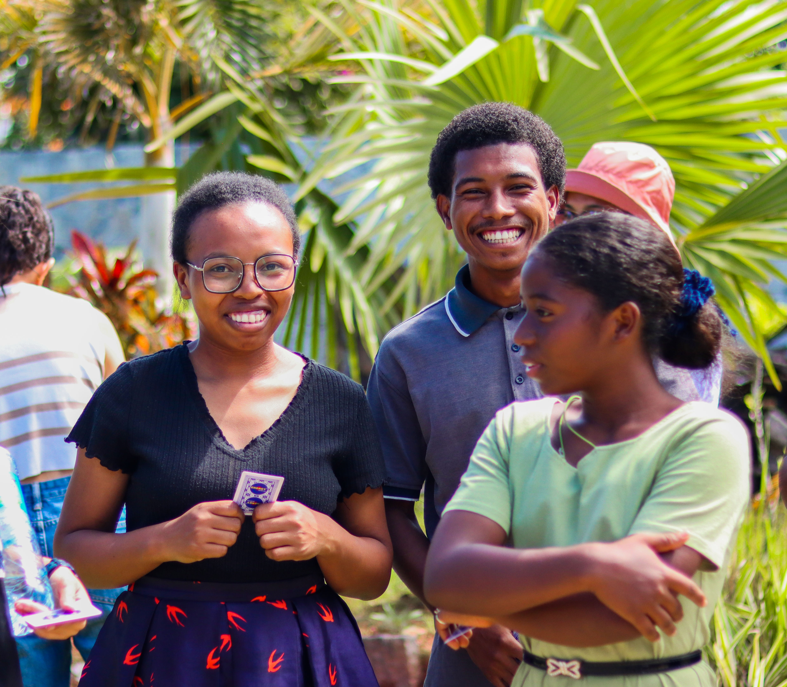
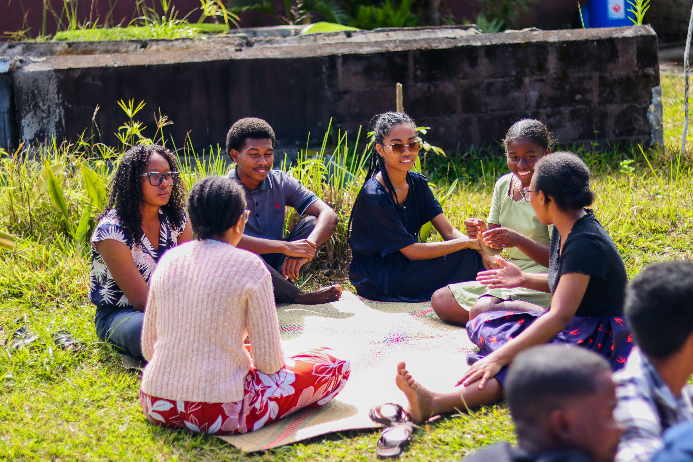
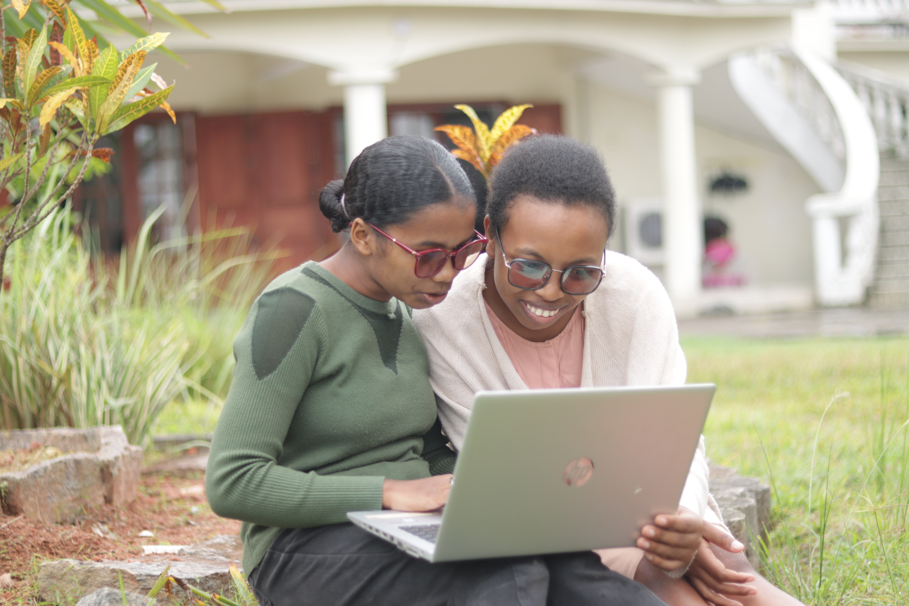
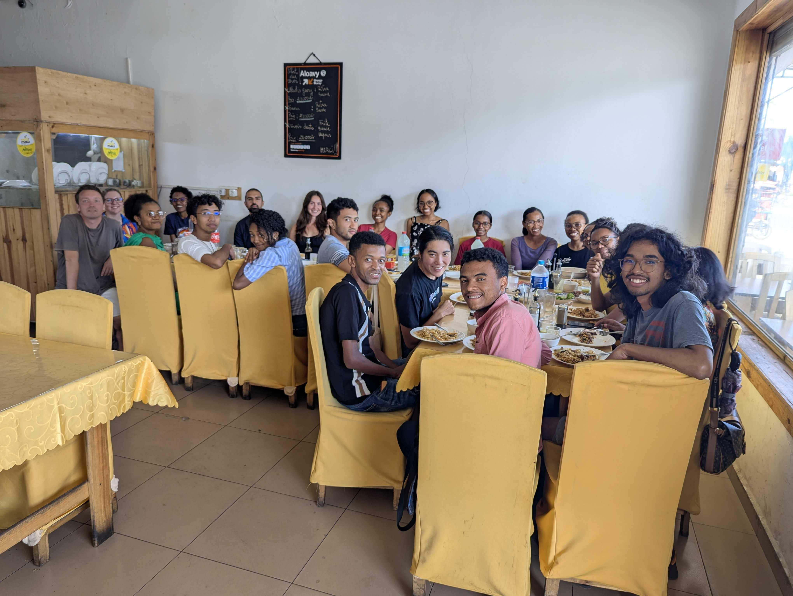
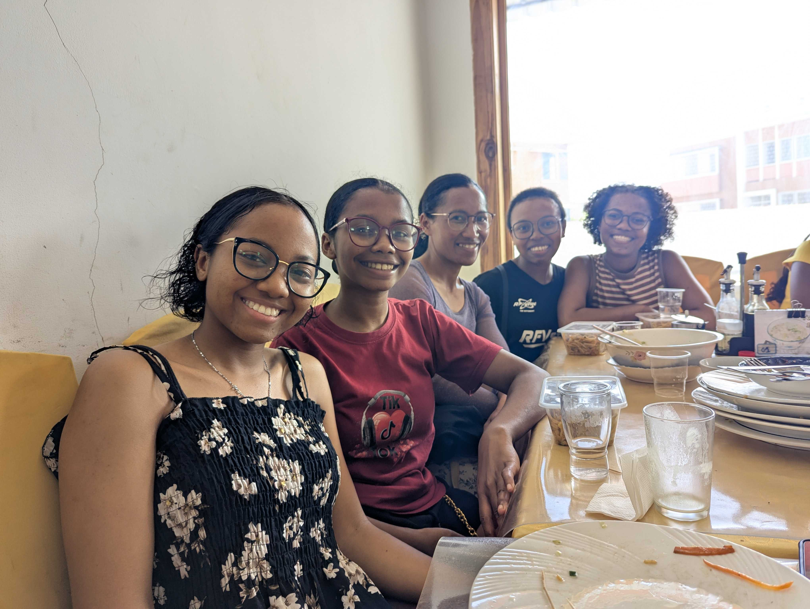
MY LIFE AT ONJA
I really enjoy my journey at Onja as everyone in it is all so welcoming, kind, talkative, and caring 🥺🫂 ..... I totally feel like I am next to my parents and my siblings every single day here 🥹🫶 ... Therefore, in this website, I would like to thank you all for the love, the kindness, the care, and everything that you do to me every single day, may God always protect and help you all in everything you do and may Him make all yours goals and desires happen in your lives 🙏✨🎉